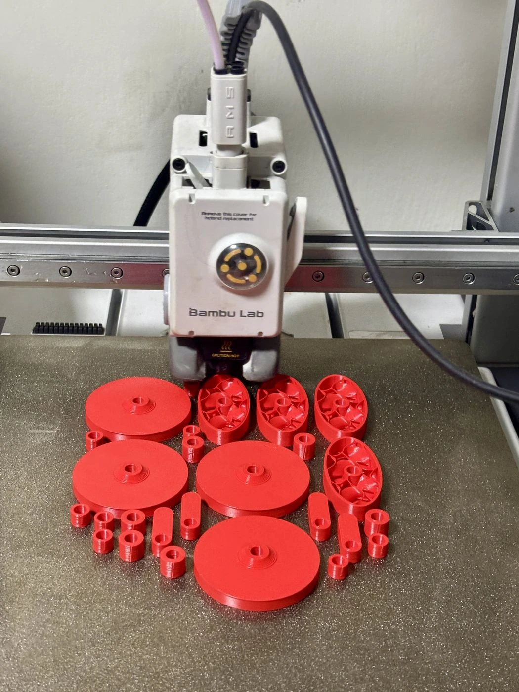
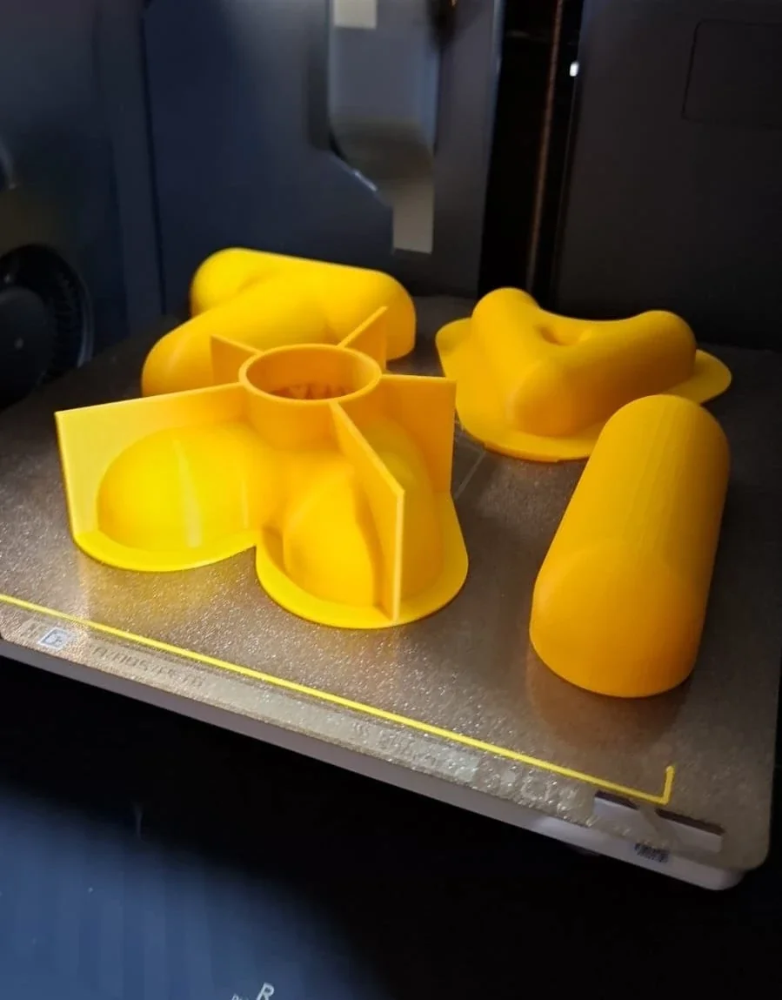
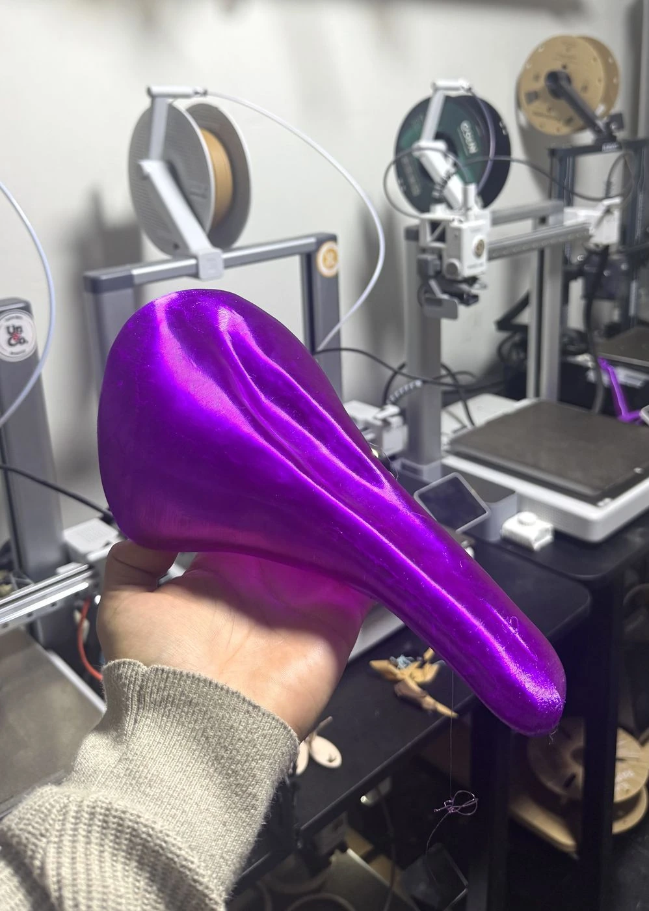
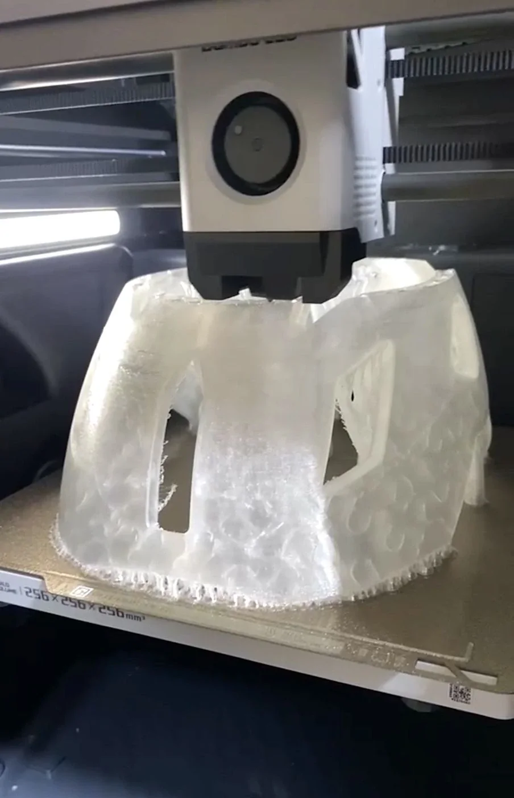
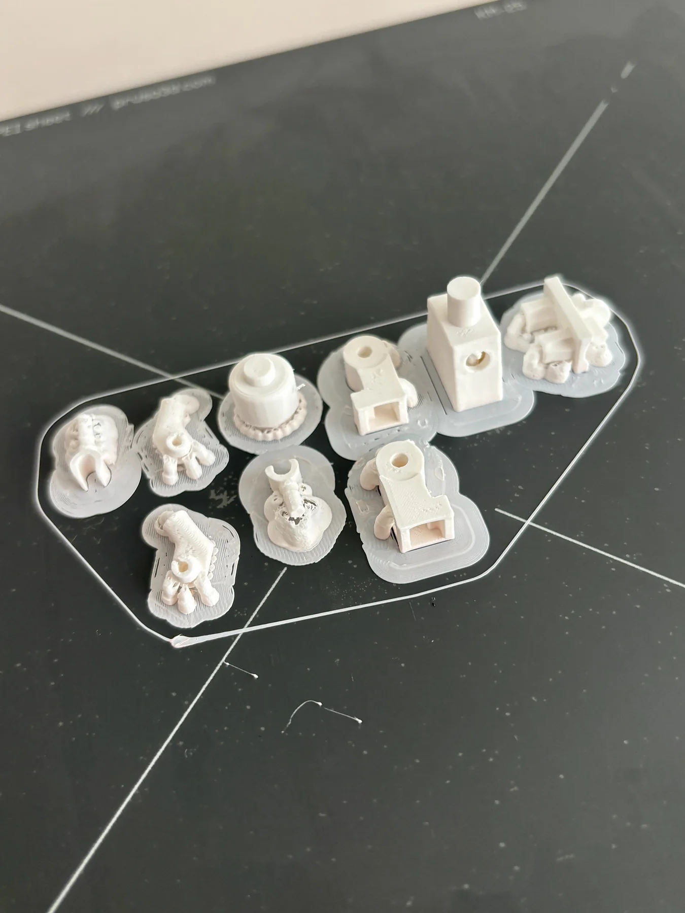

Si ya está resuelto, vamos directo a máquina.
Piezas sueltas, prototipos y series cortas. Si el archivo está listo, fabricamos.
De una pieza a un lote.
Elegimos el proceso según la pieza.

Series cortasDecenas, no miles

Moldes y utillajeHerramienta, no producto

Piezas funcionalesMaterial flexible
Combinamos procesos.
Podemos combinar impresión, corte y grabado.
Distintas escalas.
El proceso cambia según escala y uso.


Mándanos el archivo.
Archivo + material + cantidad.